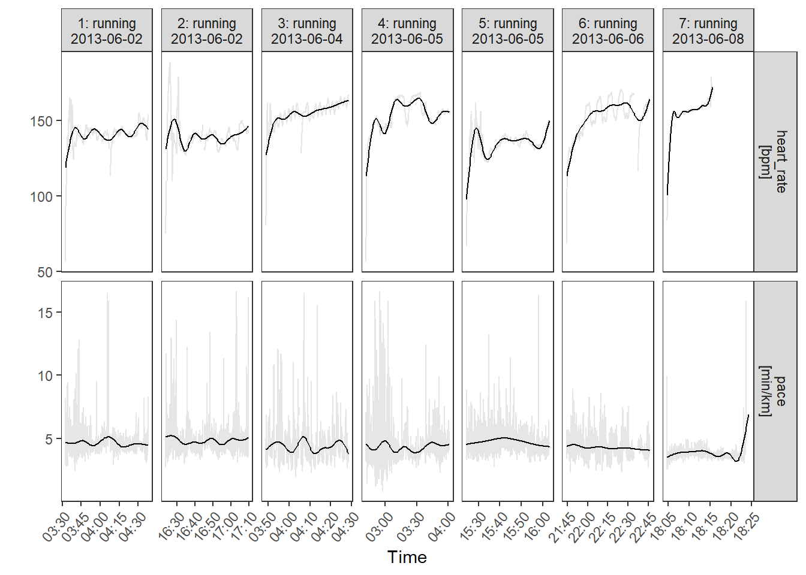

2 Preamble and some demonstration functions
This is an R Markdown Notebook. When you execute code within the notebook, the results appear beneath the code.
Try executing this chunk by clicking the Run button within the chunk or by placing your cursor inside it and pressing Ctrl+Shift+Enter.
2.1 First, we’re going to load libraries
Normally you’d hide the code chunk below, but in this instance we’ll keep it there.
library(tidyverse) #loads ggplot2, stringr,
#Installing tidyverse includes (but won't load as part of it) readxl, jsonlite, lubridate, httr, rvest, xml2, googlesheets4,
library(readxl)
library(jsonlite)
library(lubridate)
library(httr)
#these are also useful (in part to demonstrate features)
library(psych)
library(doBy)
library(reshape2)
library(lattice)
library(scales)
library(tidytext)
#SimComp lets me create some random datasets with defined properties
library(SimComp)
#The ones below are specifically for this data
library(dslabs)
library(trackeR)
library(trackeRapp)
#library(maptools)
#library(revgeo)Add a new chunk by clicking the Insert Chunk button on the toolbar or by pressing Ctrl+Alt+I.
When you save the notebook, an HTML file containing the code and output will be saved alongside it (click the Preview button or press Ctrl+Shift+K to preview the HTML file).
The preview shows you a rendered HTML copy of the contents of the editor. Consequently, unlike Knit, Preview does not run any R code chunks. Instead, the output of the chunk when it was last run in the editor is displayed.
2.2 Garmin
#uses the library trackeR. See vignette at https://cran.r-project.org/web/packages/trackeR/vignettes/TourDetrackeR.html - read for detail
#First we're going to load some dummy data.
#to do this with your own data, you'll need to use the function read_container
#TO DO THAT YOU SHOULD UNCOMMENT THE FOLLOWING TWO LINES
#BUT FOR THE PURPOSES OF THIS DEMO I'M JUST GOING TO IMPORT THE PACKAGE DATA
#filepath <- "private/your_Garmin_export.TCX.gz"
#runDF <- read_container(filepath, type = "tcx", timezone = "GMT") #check other options
##################################################
##################################################
runDF <- data(runs)
plot(runs, session = 1:7)
summary(runs, session = 1, moving_threshold = c(cycling = 2, running = 1, swimming = 0.5))##
## *** Session 1 : running ***
##
## Session times: 2013-06-02 03:32:15 - 2013-06-02 04:37:56
## Distance: 14130.7 m
## Duration: 65.68 mins
## Moving time: 64.17 mins
## Average speed: 3.59 m_per_s
## Average speed moving: 3.67 m_per_s
## Average pace (per 1 km): 4:38 min:sec
## Average pace moving (per 1 km): 4:32 min:sec
## Average cadence running: 88.66 steps_per_min
## Average cadence cycling: NA rev_per_min
## Average cadence running moving: 88.87 steps_per_min
## Average cadence cycling moving: NA rev_per_min
## Average power: NA W
## Average power moving: NA W
## Average heart rate: 141.11 bpm
## Average heart rate moving: 141.13 bpm
## Average heart rate resting: 136.76 bpm
## Average temperature: NA C
## Total elevation gain: 94.2 m
## Work to rest ratio: 42.31
##
## Moving thresholds: 2.0 (cycling) 1.0 (running) 0.5 (swimming) m_per_s
## Unit reference sport: running# run_sum <- lapply(runs, function(x){
# summary(x, session = 1, moving_threshold = c(cycling = 2, running = 1, swimming = 0.5))
# })2.3 Text mining demo
Show some functions for named entity recognition, sentiment analysis, and other text stuff.
#using https://rafalab.github.io/dsbook/text-mining.html
#and https://cran.r-project.org/web/packages/tidytext/vignettes/tidytext.html
tweets <- data("trump_tweets") #from the dslabs library2.4 Image processing Images
Show some functions for dealing with image data, including image recognition
2.5 EDA and Descriptive Statistics
Show some…
2.6 Other fun examples
Browser history data, google takeout, facebook data, maps, whatever else.